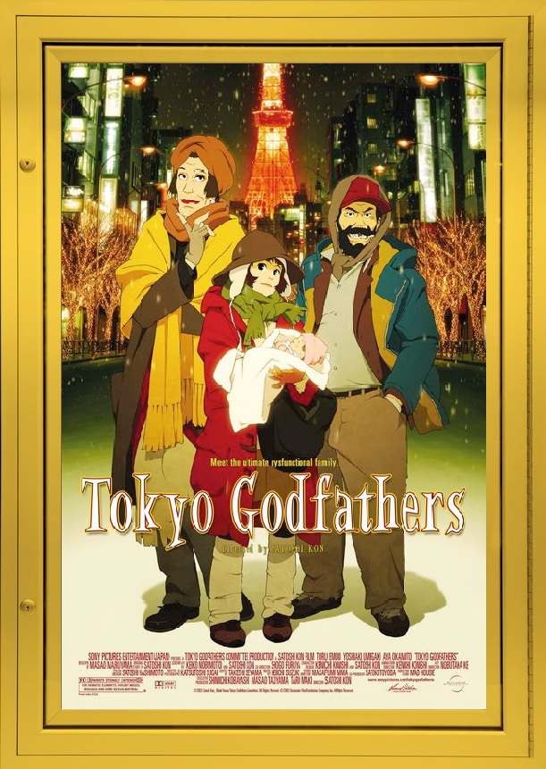

2016 was a year where too many artists lost their lives. Some of my favorite actors and actresses have died and that left a massive hole in my heart and everyone else's. Unfortunately, we've lost many other celebrities prior to this god-awful year, Anime fans lost an aspiring icon in 2010, that icon was acclaimed director Satoshi Kon. Despite only directing a hand-full of films Kon was instantly recognized for his brilliance in filmmaking and storytelling. For today, I'm going to be introducing you one his most beloved works: TOKYO GODFATHERS.
It's Christmas Eve and everyone’s settling down for the holidays, well almost everyone. While everyone's enjoying the holidays, three homeless people discover an abandoned baby among a pile of trash. The three-homeless people, a transvestite, a washed-out gambler, and a runway, decide to take it upon themselves to find the child’s parents and create a holiday miracle before the new year
A lot more happens in this film, but I don't want to go into more detail. This is something you must experience yourself and trust me the journey is well worth it. Now, unlike most anime, this movie has a more "normal" appearance. There's no swords, guns, or violence (to a certain degree) and not whole lot of questionable material (again, to a certain degree). This movie is much more grounded and this can be a factor in attracting people to this film. A lot of the topics that TOKYO GODFATHERS discusses is very relatable, the way most of the characters solve their problems are things that can easily connect with the viewer. It's reasons like this are why, if people are interested in checking out anime, they should definitely check out this film as a gateway into this form of entertainment.
So, if you’re looking for a film to watch this New Year's Eve, and find a gateway into Anime, then you should watch TOKYO GODFATHERS.
Final Rating: